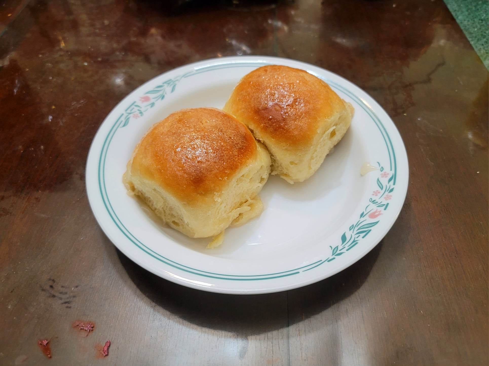

Pani Popo

Ingredients:
Dough:
- 420 g Flour
- 50 g Sugar
- 28 g Milk powder
- 2 1/4 tsp Instant yeast or Dry active yeast
- 170 g Water
- 2 large Eggs
- 4 tbsp (57 g) Butter, softened
- 1 1/4 tsp (8 g) Salt
- 1 tsp Vanilla extract
Coconut Sauce:
- 1 1/4 cups Coconut milk
- 1/2 cup Sugar
- 1/2 tbsp Cornstarch
- 1/8 tsp Salt
Instructions:
- Combine the dough ingredients and knead until a smooth dough, 5-7 minutes in the stand mixer on second speed. It should barely clean the sides of the bowl and form a soft, smooth ball.
- Place the dough in a lightly greased sealable container. Let rise until doubled in size, about 1 hour.
- Grease a 9x13" baking dish.
- Transfer the dough to a lightly greased work surface and deflate. Then divide the dough into 12 equal pieces using a weighing scale. Roll the balls of dough into a tight ball and place, evenly spaced, onto the baking dish. Cover lightly with plastic wrap and allow to rise for 45-60 minutes.
- Preheat the oven to 350 degrees Fahrenheit.
- 20 minutes before done rising, prepare the sauce. Combine the ingredients into a saucepan and bring to a simmer over medium-high heat. Stir constantly until thickened slightly, about 5-7 minutes.
- Pour the warm sauce over risen dough balls. Pour evenly accross the baking dish. Then bake the buns for 18-25 minutes, or until golden brown on top and it reads an internal temperature of 190 degrees Fahrenheit.
- Serve immediately, scooping up some sauce with each bun..